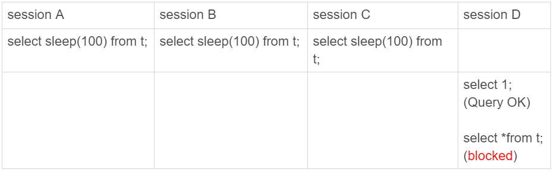
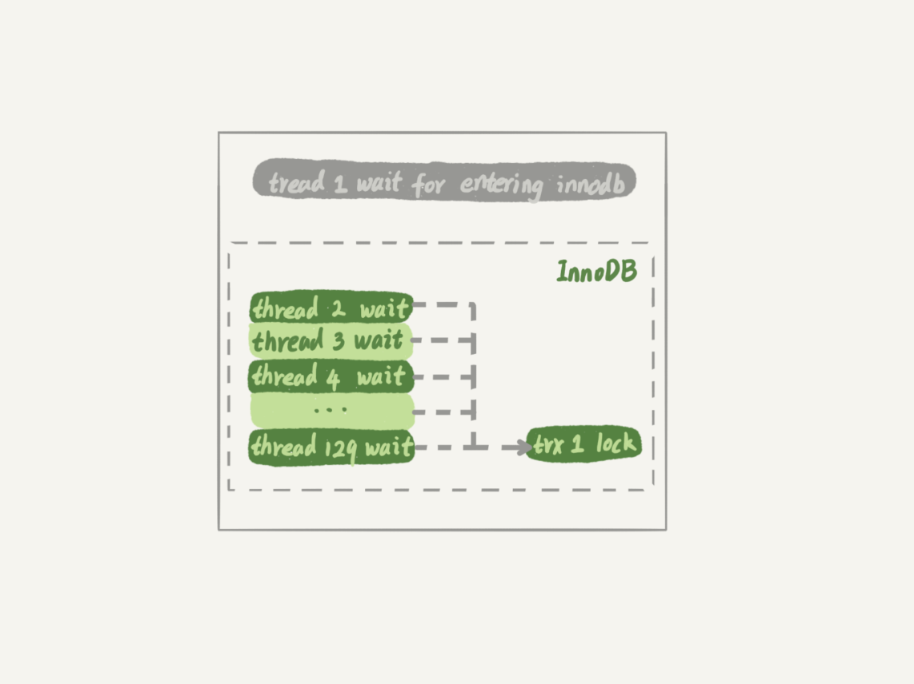
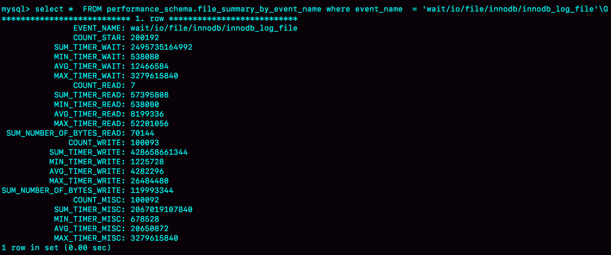

- 00 开篇词 这一次，让我们一起来搞懂MySQL.md.html
- 01 基础架构：一条SQL查询语句是如何执行的？.md.html
- 02 日志系统：一条SQL更新语句是如何执行的？.md.html
- 03 事务隔离：为什么你改了我还看不见？.md.html
- 04 深入浅出索引（上）.md.html
- 05 深入浅出索引（下）.md.html
- 06 全局锁和表锁 ：给表加个字段怎么有这么多阻碍？.md.html
- 07 行锁功过：怎么减少行锁对性能的影响？.md.html
- 08 事务到底是隔离的还是不隔离的？.md.html
- 09 普通索引和唯一索引，应该怎么选择？.md.html
- 10 MySQL为什么有时候会选错索引？.md.html
- 11 怎么给字符串字段加索引？.md.html
- 12 为什么我的MySQL会“抖”一下？.md.html
- 13 为什么表数据删掉一半，表文件大小不变？.md.html
- 14 count()这么慢，我该怎么办？.md.html
- 15 答疑文章（一）：日志和索引相关问题.md.html
- 16 “order by”是怎么工作的？.md.html
- 17 如何正确地显示随机消息？.md.html
- 18 为什么这些SQL语句逻辑相同，性能却差异巨大？.md.html
- 19 为什么我只查一行的语句，也执行这么慢？.md.html
- 20 幻读是什么，幻读有什么问题？.md.html
- 21 为什么我只改一行的语句，锁这么多？.md.html
- 22 MySQL有哪些“饮鸩止渴”提高性能的方法？.md.html
- 23 MySQL是怎么保证数据不丢的？.md.html
- 24 MySQL是怎么保证主备一致的？.md.html
- 25 MySQL是怎么保证高可用的？.md.html
- 26 备库为什么会延迟好几个小时？.md.html
- 27 主库出问题了，从库怎么办？.md.html
- 28 读写分离有哪些坑？.md.html
- 29 如何判断一个数据库是不是出问题了？.md.html
- 30 答疑文章（二）：用动态的观点看加锁.md.html
- 31 误删数据后除了跑路，还能怎么办？.md.html
- 32 为什么还有kill不掉的语句？.md.html
- 33 我查这么多数据，会不会把数据库内存打爆？.md.html
- 34 到底可不可以使用join？.md.html
- 35 join语句怎么优化？.md.html
- 36 为什么临时表可以重名？.md.html
- 37 什么时候会使用内部临时表？.md.html
- 38 都说InnoDB好，那还要不要使用Memory引擎？.md.html
- 39 自增主键为什么不是连续的？.md.html
- 40 insert语句的锁为什么这么多？.md.html
- 41 怎么最快地复制一张表？.md.html
- 42 grant之后要跟着flush privileges吗？.md.html
- 43 要不要使用分区表？.md.html
- 44 答疑文章（三）：说一说这些好问题.md.html
- 45 自增id用完怎么办？.md.html
- 我的MySQL心路历程.md.html
- 结束语 点线网面，一起构建MySQL知识网络.md.html
- 捐赠
29 如何判断一个数据库是不是出问题了？
我在第[25]和[27]篇文章中，和你介绍了主备切换流程。通过这些内容的讲解，你应该已经很清楚了：在一主一备的双 M 架构里，主备切换只需要把客户端流量切到备库；而在一主多从架构里，主备切换除了要把客户端流量切到备库外，还需要把从库接到新主库上。
主备切换有两种场景，一种是主动切换，一种是被动切换。而其中被动切换，往往是因为主库出问题了，由 HA 系统发起的。
这也就引出了我们今天要讨论的问题：怎么判断一个主库出问题了？
你一定会说，这很简单啊，连上 MySQL，执行个 select 1 就好了。但是 select 1 成功返回了，就表示主库没问题吗？
select 1 判断
实际上，select 1 成功返回，只能说明这个库的进程还在，并不能说明主库没问题。现在，我们来看一下这个场景。
set global innodb_thread_concurrency=3;
CREATE TABLE `t` (
`id` int(11) NOT NULL,
`c` int(11) DEFAULT NULL,
PRIMARY KEY (`id`)
) ENGINE=InnoDB;
insert into t values(1,1)

图 1 查询 blocked
我们设置 innodb_thread_concurrency 参数的目的是，控制 InnoDB 的并发线程上限。也就是说，一旦并发线程数达到这个值，InnoDB 在接收到新请求的时候，就会进入等待状态，直到有线程退出。
这里，我把 innodb_thread_concurrency 设置成 3，表示 InnoDB 只允许 3 个线程并行执行。而在我们的例子中，前三个 session 中的 sleep(100)，使得这三个语句都处于“执行”状态，以此来模拟大查询。
你看到了， session D 里面，select 1 是能执行成功的，但是查询表 t 的语句会被堵住。也就是说，如果这时候我们用 select 1 来检测实例是否正常的话，是检测不出问题的。
在 InnoDB 中，innodb_thread_concurrency 这个参数的默认值是 0，表示不限制并发线程数量。但是，不限制并发线程数肯定是不行的。因为，一个机器的 CPU 核数有限，线程全冲进来，上下文切换的成本就会太高。
所以，通常情况下，我们建议把 innodb_thread_concurrency 设置为 64~128 之间的值。这时，你一定会有疑问，并发线程上限数设置为 128 够干啥，线上的并发连接数动不动就上千了。
产生这个疑问的原因，是搞混了并发连接和并发查询。
并发连接和并发查询，并不是同一个概念。你在 show processlist 的结果里，看到的几千个连接，指的就是并发连接。而“当前正在执行”的语句，才是我们所说的并发查询。
并发连接数达到几千个影响并不大，就是多占一些内存而已。我们应该关注的是并发查询，因为并发查询太高才是 CPU 杀手。这也是为什么我们需要设置 innodb_thread_concurrency 参数的原因。
然后，你可能还会想起我们在[第 7 篇文章]中讲到的热点更新和死锁检测的时候，如果把 innodb_thread_concurrency 设置为 128 的话，那么出现同一行热点更新的问题时，是不是很快就把 128 消耗完了，这样整个系统是不是就挂了呢？
实际上，在线程进入锁等待以后，并发线程的计数会减一，也就是说等行锁（也包括间隙锁）的线程是不算在 128 里面的。
MySQL 这样设计是非常有意义的。因为，进入锁等待的线程已经不吃 CPU 了；更重要的是，必须这么设计，才能避免整个系统锁死。
为什么呢？假设处于锁等待的线程也占并发线程的计数，你可以设想一下这个场景：
- 线程 1 执行 begin; update t set c=c+1 where id=1, 启动了事务 trx1， 然后保持这个状态。这时候，线程处于空闲状态，不算在并发线程里面。
- 线程 2 到线程 129 都执行 update t set c=c+1 where id=1; 由于等行锁，进入等待状态。这样就有 128 个线程处于等待状态；
- 如果处于锁等待状态的线程计数不减一，InnoDB 就会认为线程数用满了，会阻止其他语句进入引擎执行，这样线程 1 不能提交事务。而另外的 128 个线程又处于锁等待状态，整个系统就堵住了。
下图 2 显示的就是这个状态。

图 2 系统锁死状态（假设等行锁的语句占用并发计数）
这时候 InnoDB 不能响应任何请求，整个系统被锁死。而且，由于所有线程都处于等待状态，此时占用的 CPU 却是 0，而这明显不合理。所以，我们说 InnoDB 在设计时，遇到进程进入锁等待的情况时，将并发线程的计数减 1 的设计，是合理而且是必要的。
虽然说等锁的线程不算在并发线程计数里，但如果它在真正地执行查询，就比如我们上面例子中前三个事务中的 select sleep(100) from t，还是要算进并发线程的计数的。
在这个例子中，同时在执行的语句超过了设置的 innodb_thread_concurrency 的值，这时候系统其实已经不行了，但是通过 select 1 来检测系统，会认为系统还是正常的。
因此，我们使用 select 1 的判断逻辑要修改一下。
查表判断
为了能够检测 InnoDB 并发线程数过多导致的系统不可用情况，我们需要找一个访问 InnoDB 的场景。一般的做法是，在系统库（mysql 库）里创建一个表，比如命名为 health_check，里面只放一行数据，然后定期执行：
mysql> select * from mysql.health_check;
使用这个方法，我们可以检测出由于并发线程过多导致的数据库不可用的情况。
但是，我们马上还会碰到下一个问题，即：空间满了以后，这种方法又会变得不好使。
我们知道，更新事务要写 binlog，而一旦 binlog 所在磁盘的空间占用率达到 100%，那么所有的更新语句和事务提交的 commit 语句就都会被堵住。但是，系统这时候还是可以正常读数据的。
因此，我们还是把这条监控语句再改进一下。接下来，我们就看看把查询语句改成更新语句后的效果。
更新判断
既然要更新，就要放个有意义的字段，常见做法是放一个 timestamp 字段，用来表示最后一次执行检测的时间。这条更新语句类似于：
mysql> update mysql.health_check set t_modified=now();
节点可用性的检测都应该包含主库和备库。如果用更新来检测主库的话，那么备库也要进行更新检测。
但，备库的检测也是要写 binlog 的。由于我们一般会把数据库 A 和 B 的主备关系设计为双 M 结构，所以在备库 B 上执行的检测命令，也要发回给主库 A。
但是，如果主库 A 和备库 B 都用相同的更新命令，就可能出现行冲突，也就是可能会导致主备同步停止。所以，现在看来 mysql.health_check 这个表就不能只有一行数据了。
为了让主备之间的更新不产生冲突，我们可以在 mysql.health_check 表上存入多行数据，并用 A、B 的 server_id 做主键。
mysql> CREATE TABLE `health_check` (
`id` int(11) NOT NULL,
`t_modified` timestamp NOT NULL DEFAULT CURRENT_TIMESTAMP,
PRIMARY KEY (`id`)
) ENGINE=InnoDB;
/* 检测命令 */
insert into mysql.health_check(id, t_modified) values (@@server_id, now()) on duplicate key update t_modified=now();
由于 MySQL 规定了主库和备库的 server_id 必须不同（否则创建主备关系的时候就会报错），这样就可以保证主、备库各自的检测命令不会发生冲突。
更新判断是一个相对比较常用的方案了，不过依然存在一些问题。其中，“判定慢”一直是让 DBA 头疼的问题。
你一定会疑惑，更新语句，如果失败或者超时，就可以发起主备切换了，为什么还会有判定慢的问题呢？
其实，这里涉及到的是服务器 IO 资源分配的问题。
首先，所有的检测逻辑都需要一个超时时间 N。执行一条 update 语句，超过 N 秒后还不返回，就认为系统不可用。
你可以设想一个日志盘的 IO 利用率已经是 100% 的场景。这时候，整个系统响应非常慢，已经需要做主备切换了。
但是你要知道，IO 利用率 100% 表示系统的 IO 是在工作的，每个请求都有机会获得 IO 资源，执行自己的任务。而我们的检测使用的 update 命令，需要的资源很少，所以可能在拿到 IO 资源的时候就可以提交成功，并且在超时时间 N 秒未到达之前就返回给了检测系统。
检测系统一看，update 命令没有超时，于是就得到了“系统正常”的结论。
也就是说，这时候在业务系统上正常的 SQL 语句已经执行得很慢了，但是 DBA 上去一看，HA 系统还在正常工作，并且认为主库现在处于可用状态。
之所以会出现这个现象，根本原因是我们上面说的所有方法，都是基于外部检测的。外部检测天然有一个问题，就是随机性。
因为，外部检测都需要定时轮询，所以系统可能已经出问题了，但是却需要等到下一个检测发起执行语句的时候，我们才有可能发现问题。而且，如果你的运气不够好的话，可能第一次轮询还不能发现，这就会导致切换慢的问题。
所以，接下来我要再和你介绍一种在 MySQL 内部发现数据库问题的方法。
内部统计
针对磁盘利用率这个问题，如果 MySQL 可以告诉我们，内部每一次 IO 请求的时间，那我们判断数据库是否出问题的方法就可靠得多了。
其实，MySQL 5.6 版本以后提供的 performance_schema 库，就在 file_summary_by_event_name 表里统计了每次 IO 请求的时间。
file_summary_by_event_name 表里有很多行数据，我们先来看看 event_name=‘wait/io/file/innodb/innodb_log_file’这一行。

图 3 performance_schema.file_summary_by_event_name 的一行
图中这一行表示统计的是 redo log 的写入时间，第一列 EVENT_NAME 表示统计的类型。
接下来的三组数据，显示的是 redo log 操作的时间统计。
第一组五列，是所有 IO 类型的统计。其中，COUNT_STAR 是所有 IO 的总次数，接下来四列是具体的统计项， 单位是皮秒；前缀 SUM、MIN、AVG、MAX，顾名思义指的就是总和、最小值、平均值和最大值。
第二组六列，是读操作的统计。最后一列 SUM_NUMBER_OF_BYTES_READ 统计的是，总共从 redo log 里读了多少个字节。
第三组六列，统计的是写操作。
最后的第四组数据，是对其他类型数据的统计。在 redo log 里，你可以认为它们就是对 fsync 的统计。
在 performance_schema 库的 file_summary_by_event_name 表里，binlog 对应的是 event_name = “wait/io/file/sql/binlog”这一行。各个字段的统计逻辑，与 redo log 的各个字段完全相同。这里，我就不再赘述了。
因为我们每一次操作数据库，performance_schema 都需要额外地统计这些信息，所以我们打开这个统计功能是有性能损耗的。
我的测试结果是，如果打开所有的 performance_schema 项，性能大概会下降 10% 左右。所以，我建议你只打开自己需要的项进行统计。你可以通过下面的方法打开或者关闭某个具体项的统计。
如果要打开 redo log 的时间监控，你可以执行这个语句：
mysql> update setup_instruments set ENABLED='YES', Timed='YES' where name like '%wait/io/file/innodb/innodb_log_file%';
假设，现在你已经开启了 redo log 和 binlog 这两个统计信息，那要怎么把这个信息用在实例状态诊断上呢？
很简单，你可以通过 MAX_TIMER 的值来判断数据库是否出问题了。比如，你可以设定阈值，单次 IO 请求时间超过 200 毫秒属于异常，然后使用类似下面这条语句作为检测逻辑。
mysql> select event_name,MAX_TIMER_WAIT FROM performance_schema.file_summary_by_event_name where event_name in ('wait/io/file/innodb/innodb_log_file','wait/io/file/sql/binlog') and MAX_TIMER_WAIT>200*1000000000;
发现异常后，取到你需要的信息，再通过下面这条语句：
mysql> truncate table performance_schema.file_summary_by_event_name;
把之前的统计信息清空。这样如果后面的监控中，再次出现这个异常，就可以加入监控累积值了。
小结
今天，我和你介绍了检测一个 MySQL 实例健康状态的几种方法，以及各种方法存在的问题和演进的逻辑。
你看完后可能会觉得，select 1 这样的方法是不是已经被淘汰了呢，但实际上使用非常广泛的 MHA（Master High Availability），默认使用的就是这个方法。
MHA 中的另一个可选方法是只做连接，就是 “如果连接成功就认为主库没问题”。不过据我所知，选择这个方法的很少。
其实，每个改进的方案，都会增加额外损耗，并不能用“对错”做直接判断，需要你根据业务实际情况去做权衡。
我个人比较倾向的方案，是优先考虑 update 系统表，然后再配合增加检测 performance_schema 的信息。
最后，又到了我们的思考题时间。
今天，我想问你的是：业务系统一般也有高可用的需求，在你开发和维护过的服务中，你是怎么判断服务有没有出问题的呢？
你可以把你用到的方法和分析写在留言区，我会在下一篇文章中选取有趣的方案一起来分享和分析。感谢你的收听，也欢迎你把这篇文章分享给更多的朋友一起阅读。
上期问题时间
上期的问题是，如果使用 GTID 等位点的方案做读写分离，在对大表做 DDL 的时候会怎么样。
假设，这条语句在主库上要执行 10 分钟，提交后传到备库就要 10 分钟（典型的大事务）。那么，在主库 DDL 之后再提交的事务的 GTID，去备库查的时候，就会等 10 分钟才出现。
这样，这个读写分离机制在这 10 分钟之内都会超时，然后走主库。
这种预期内的操作，应该在业务低峰期的时候，确保主库能够支持所有业务查询，然后把读请求都切到主库，再在主库上做 DDL。等备库延迟追上以后，再把读请求切回备库。
通过这个思考题，我主要想让关注的是，大事务对等位点方案的影响。
当然了，使用 gh-ost 方案来解决这个问题也是不错的选择。
© 2019 - 2023 Liangliang Lee. Powered by gin and hexo-theme-book.